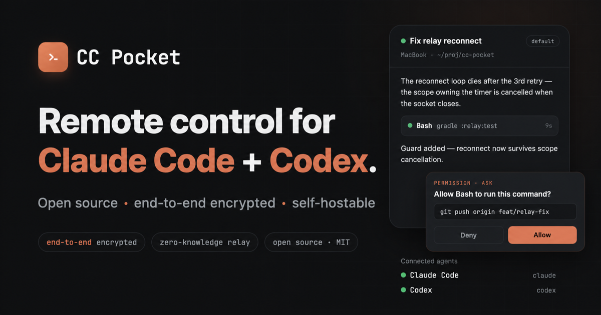

Use Claude's official Remote Control for the most direct first-party workflow. Choose CC Pocket when you want one open-source, self-hostable remote for both Claude Code and Codex, with no CC Pocket account.
- Runs where?
- Claude Code stays on your computer
- CC Pocket license
- MIT open source
- CC Pocket agents
- Claude Code + Codex
Option 1: Claude Remote Control
Anthropic documents two entry points: run /remote-control inside an existing Claude Code session, or start with claude remote-control. The official guide says Remote Control requires Claude Code 2.1.51 or later and is available on Pro, Max, Team, and Enterprise plans.
This is the first-party route. If you already use a supported Claude plan and only need Claude Code, it is the simplest place to start.
Option 2: CC Pocket
CC Pocket installs a daemon on your computer and pairs it with the mobile or desktop client. The daemon launches or resumes the local Claude Code CLI; the client lets you read streaming output, send messages, inspect changes, and approve or deny tool requests.
- Install CC Pocket on iOS, Android, macOS, Windows, or Linux.
- Install the CC Pocket daemon on the computer that runs Claude Code.
- Pair the devices, choose a project, then start or resume a Claude session.
The project README contains current install commands and release links.

What is different?
| Question | Claude Remote Control | CC Pocket |
|---|---|---|
| Provider | Anthropic, first party | Independent open-source project |
| Agent support | Claude Code | Claude Code and OpenAI Codex |
| Source / hosting | Use Anthropic's service | MIT source; relay can be self-hosted |
| CC Pocket account | Not applicable | Not required; devices pair directly |
| Best fit | Official Claude-only workflow | One cross-agent remote and inspectable deployment |
These are complementary choices. CC Pocket is not affiliated with or endorsed by Anthropic. Claude and Claude Code are trademarks of Anthropic.
Security and limits
CC Pocket encrypts client-to-daemon traffic with P-256 ECDH, HKDF, and AES-256-GCM. Its relay forwards ciphertext and does not hold the endpoint private keys. You can inspect the security and trust-boundary guide before pairing.
Important: encryption does not sandbox the local daemon. It controls the coding agent with the permissions of your operating-system user. Keep approval prompts enabled for commands you do not want executed automatically, and keep your computer online for remote access.
Sources
- Anthropic Help Center — Claude Code power user tips (official Remote Control commands, version, and plan eligibility).
- CC Pocket source repository (license, architecture, installation, and supported agents).
Product availability can change. Facts above were checked against the linked sources on July 13, 2026.